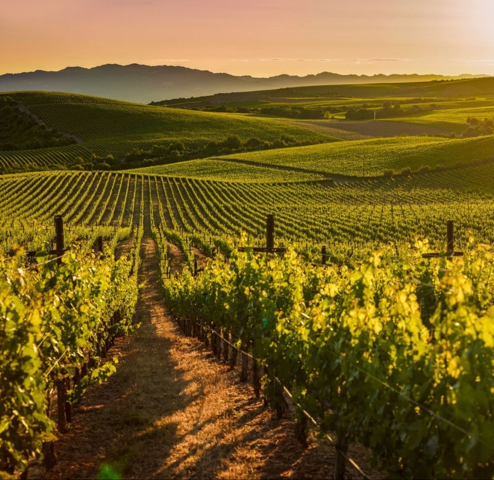

Nos activités en Italie
Balade en bateau / péniche
Découvrez les plus beaux paysages italiens depuis l'eau, en naviguant tranquillement au fil des canaux et lacs scintillants.
Excursions à vélo
Explorez les charmants villages et vignobles en pleine nature, à votre rythme, au cœur de la Toscane.
Ateliers cuisine italienne
Apprenez à cuisiner des spécialités locales avec nos chefs passionnés, de la pasta fraîche aux desserts gourmands.
Dégustation de vins
Participez à des dégustations exclusives dans des domaines viticoles, et découvrez les secrets des meilleurs crus.
